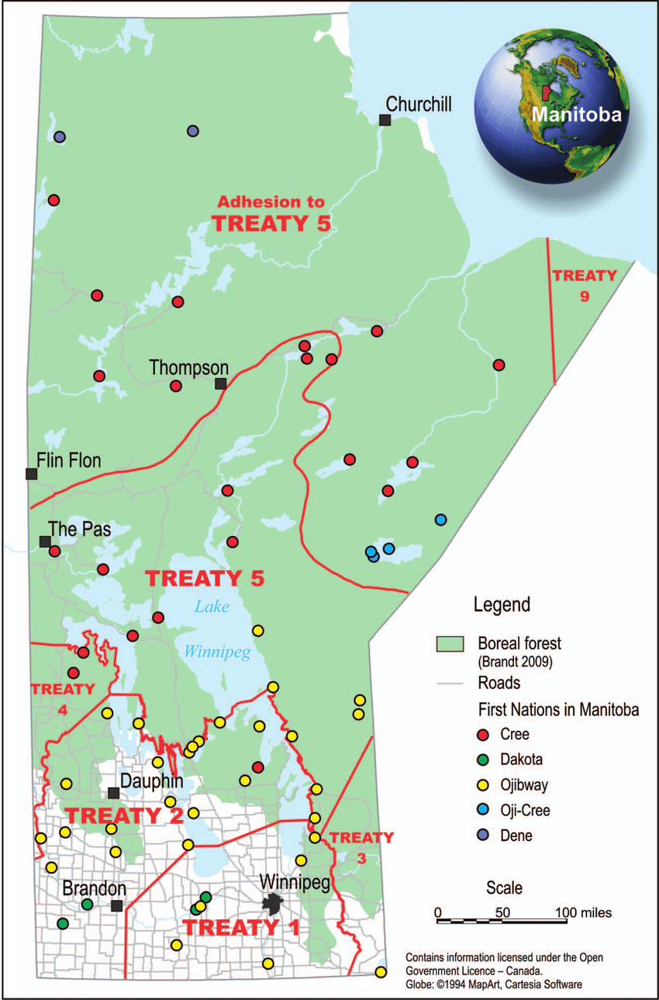

About Treaty 5
In 1875-1876, the federal government, Ojibwa people, and the Swampy Cree of Lake Winnipeg signed Treaty 5, also known as the Winnipeg Treaty. This treaty covered the Saulteaux, various bands that lived in the Beren's River region, and the Norway House region, as well as First Nations groups from northern Saskatchewan, Manitoba, and Ontario. The majority of modern-day central and northern Manitoba is covered by Treaty 5. Nothing beyond what had been provided to other first nations groups under the initial treaties was sought by the indigenous people who made up Treaty 5's population. The inhabitants of Lake Winnipeg and its surroundings had not been included by prior accords, thus they sought certain hunting and fishing privileges as well as recognition of their ownership of the region. Some groups also requested "treaty money," stating that other groups close to those covered by Treaty 5 had also received it. Additionally, two demands from certain bands contributed to the signing of this pact being a little unique. Along with monetary compensation, the band at Beren's River had wanted building equipment. Since the soils nearby were unsuitable for farming, the residents of the Norway House (located about 30 km north of Lake Winnipeg) were also suffering from starvation. This community was looking to move from the north of the lake to a region with better agricultural fields in the south.
History
The Indigenous peoples of the Lake Winnipeg region were interested in signing a treaty with the Canadian government in the mid-1870s. They demanded that the government offer comparable financial aid, provision of tools, and protection against the encroachment of outsiders (such as surveyors and settlers) on their territory after learning of the concessions provided to the Indigenous nations of Treaties 1 to 4. The government initially had no interest in drafting a new treaty, even though it was interested in opening up the Lake Winnipeg region for potential development. The agricultural area in the West had previously been granted legal ownership by Treaties 1 through 4. With the Berens River bands and other villages near the lake, the government eventually consented to start treaty negotiations. However, they were not yet willing to negotiate a treaty with Indigenous bands north of the lake, even though they too had expressed a desire to enter into a treaty with the Crown. One exception was made for the Norway House band. The government consented to their request for relocation, and it was decided that the Crown would involve the inhabitants of the Norway House in any treaty negotiations.